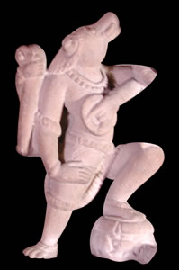

VarahaThe third incarnation of Vishnu was a boar called Varaha. Varaha was forty thousand miles wide and four thousand miles tall with white tusks. 
Vishnu was sent to earth as Varaha to recover the earth after the demon Hiranyaksha stole it. Hiranyaksha took the earth to the place where he lived under the water. Varaha dove down to Hiranyaksha's home under the water and killed the demon with his tusks. Then, he brought the earth up to the surface of the water again. |